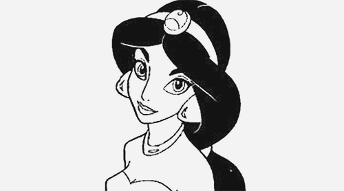

본문콘텐츠영역
Story
Aladdin is a poor street urchin who spends his time stealing food from the marketplace in the city of Agrabah. His adventures begin when he meets a young girl who happens to be Princess Jasmine, who is forced to be married by her wacky yet estranged father. Aladdin's luck suddenly changes when he retrieves a magical lamp from the Cave of Wonders. What he unwittingly gets is a fun-loving genie who only wishes to have his freedom. Little do they know is that the Sultan's sinister advisor Jafar has his own plans for both Aladdin and the lamp.
+ VIEW MORECharacter
-
- Aladdin
-
"Do you trust me?"
Despite his upbringing, at the start of the film, Aladdin was a generally optimistic, fun-loving, and charming character. Though he was forced to steal for survival, he showed joy in escaping the brutish guards, alongside his sidekick Abu, and showed an attempt to find enjoyment in the struggles of his day-to-day life. Nevertheless, though he didn't mind stealing from the marketplace denizens, albeit forcibly so, Aladdin was, in no way, a selfish character. Not only were the thefts for survival, as mentioned above, but Aladdin was also never above sacrificing his food for the less fortunate of Agrabah, such as starving children.
VIEW MORE
- 
-
- Jasmine
-
"I am not a prize to be won!"
Jasmine is the soon-to-be fifteen year old daughter of the wealthy Sultan of Agrabah. Unwilling to marry any of the snobbish and self-centered princes her father suggests, she runs away from home, but having never been outside the palace before, she inadvertently gets into trouble when she gives an apple to a young boy without paying for it. Before the merchant can punish her by amputating her hand, a street urchin named Aladdin quickly steps in and saves her by claiming that Jasmine is his sister.
VIEW MORE
-
- Genie
-
"To Be Free. Such A Thing Would Be Greater Than All The Magic And All The Treasures In The World."
Genie is full of life and bursting with positive energy. Though he is amongst the most powerful, chaotic beings in the universe, Genie is benevolent, easygoing, and friendly; so much so, that he primarily uses his abilities as a means to amuse both himself and those around him. According to the filmmakers' commentary, Genie's energy is a direct result of his imprisonment; his years of isolation have left him teaming with vigor, so whenever he is given a chance at freedom, his first instinct is to go wild with his powers by cracking jokes and entertaining whatever audience he has.
VIEW MORE